CVE-2025-25257 FortiWeb SQL 注入漏洞
- date
- 2025-07-15 22:25:09
漏洞信息
CVE-2025-25257 FortiWeb SQL 注入漏洞
环境搭建
下载链接：https://dl.partian.co/FortiWeb/Version_7.00/7.6/7.6.3/
默认凭证：admin 空
配置网络，这里修改适配器为 VMnet8 ：
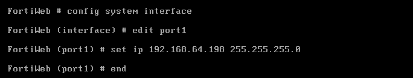
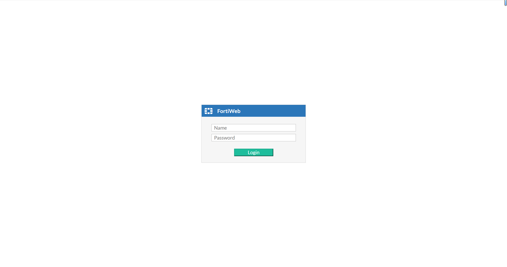
固件获取
vmdk 挂载
使用版本：7.6.3
使用一个 Linux 虚拟机挂载 vmdk 文件：
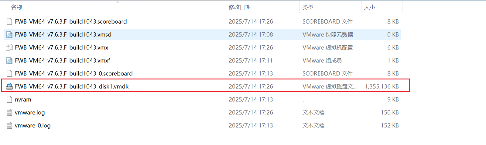
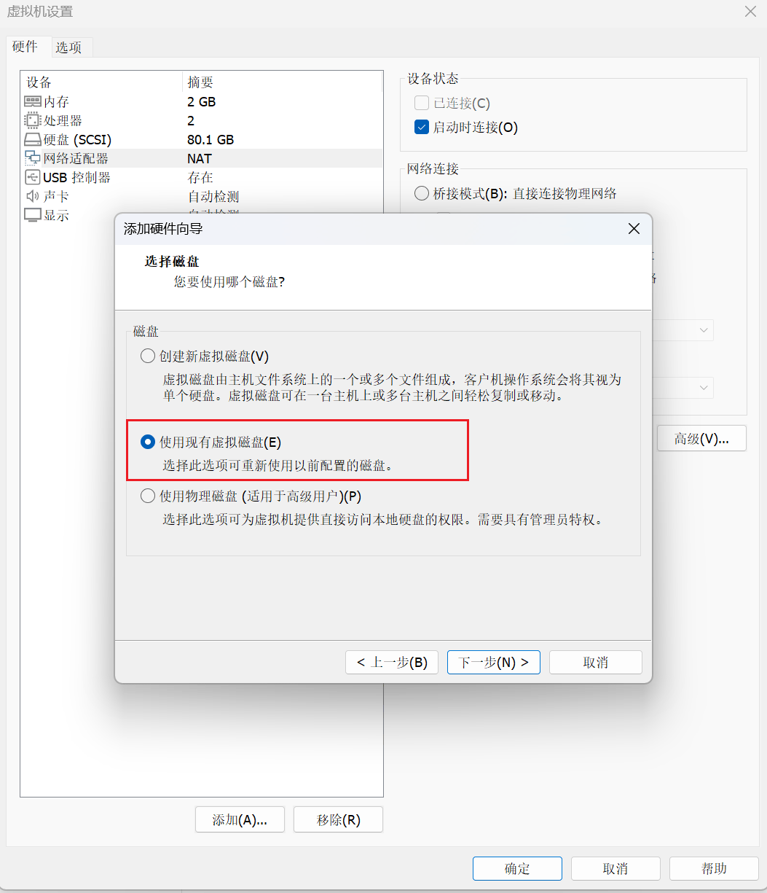
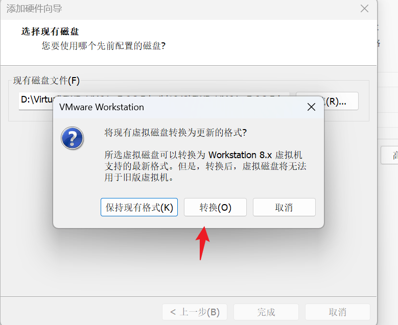
启动虚拟机就可以看到挂载的东西：
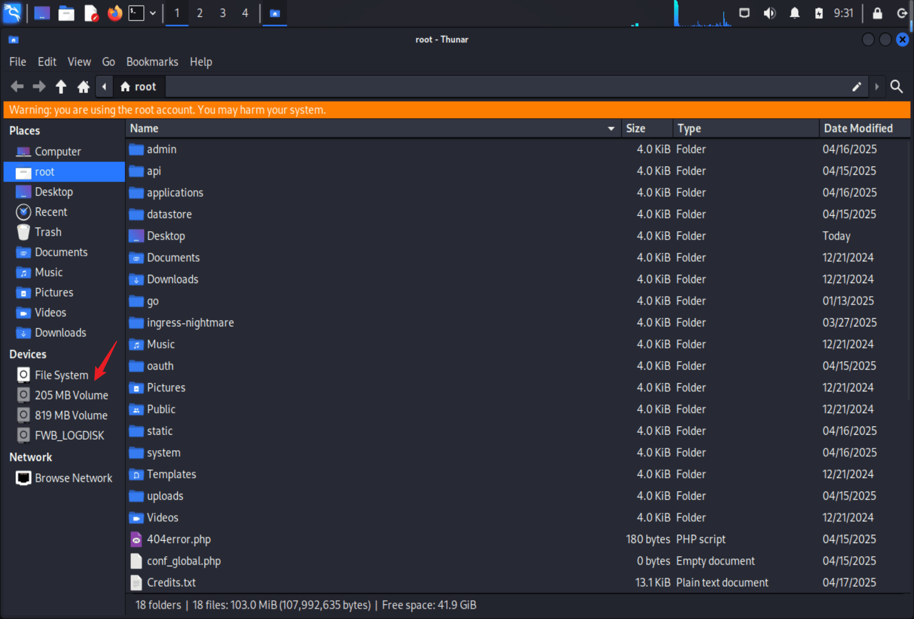
把 rootfs.gz 拿出来使用 binwalk 提取：
| binwalk -Me rootfs.gz --run-as=root
|
完成后就可以看到完整的目录：
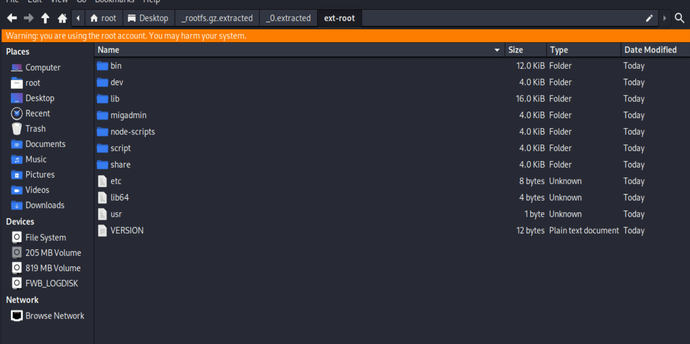
http 服务在 /bin/httpsd 文件中，拖到 IDA 中。
cli 获取 shell
部分版本可以通过 cli 配置获取到 shell：
| # 切换为 shell
config system console
set shell sh
end
# 切换为 cli, 测试不可用
# set shell cli
|
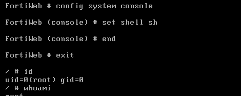
SQL 注入
watchtowr 是通过 7.6.3 和 7.6.4 diff 发现漏洞函数位于 get_fabric_user_by_token 函数中：
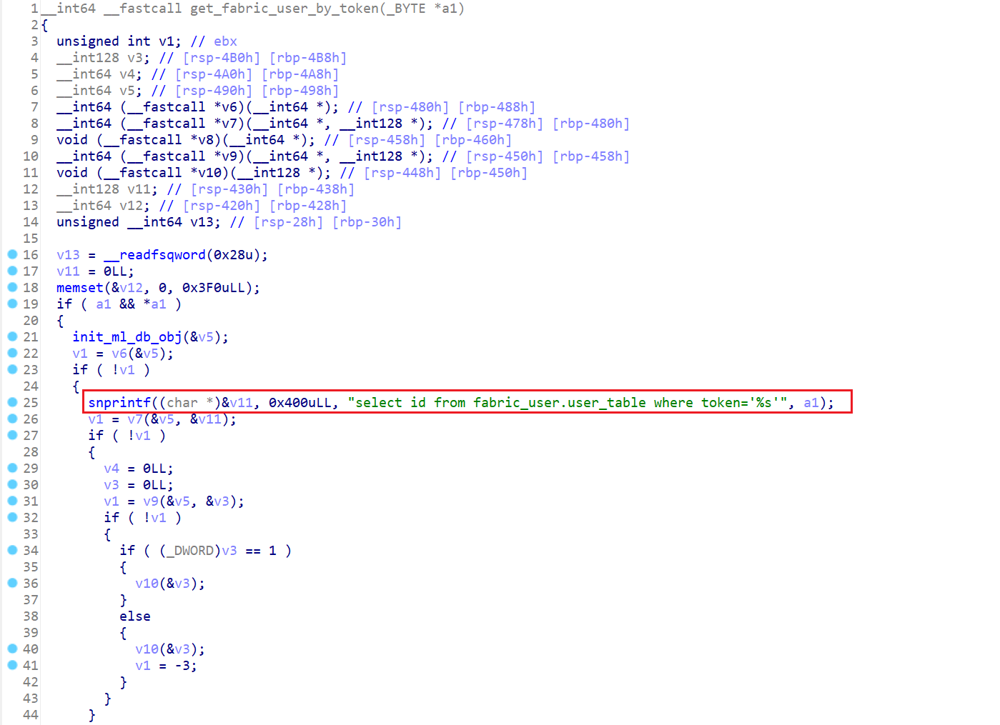
找调用的地方：
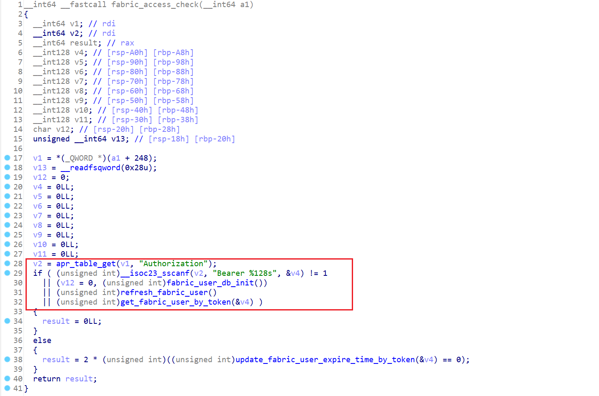
| v2 = apr_table_get(v1, "Authorization");
if ( (unsigned int)__isoc23_sscanf(v2, "Bearer %128s", &v4) != 1
|| (v12 = 0, (unsigned int)fabric_user_db_init())
|| (unsigned int)refresh_fabric_user()
|| (unsigned int)get_fabric_user_by_token(&v4) )
{
result = 0LL;
}
|
这里的 __isoc23_sscanf(v2, "Bearer %128s", &v4) 意思是获取 Bearer 后最多 128 个非空白字符，所以不能出现空格并且长度不能超过 128 个。
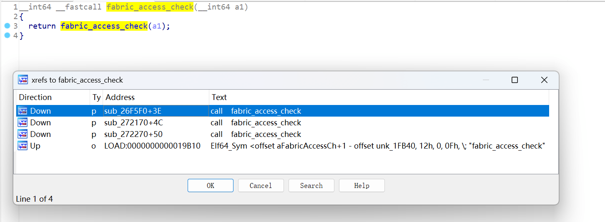
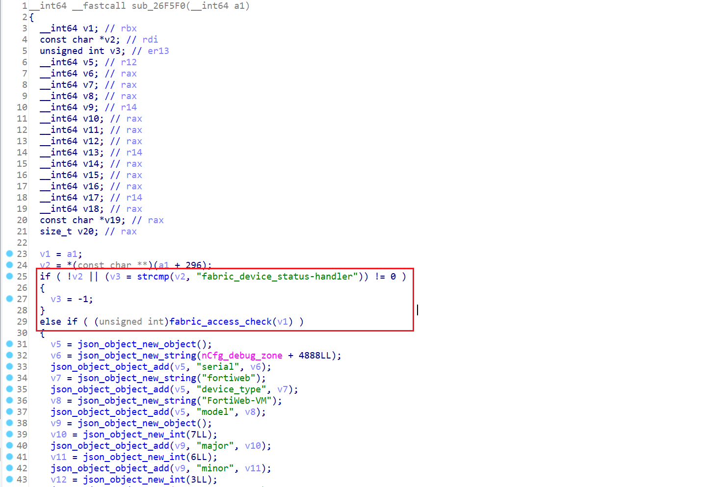
| v2 = *(const char **)(a1 + 296);
if ( !v2 || (v3 = strcmp(v2, "fabric_device_status-handler")) != 0 )
{
v3 = -1;
}
else if ( (unsigned int)fabric_access_check(v1) )
|
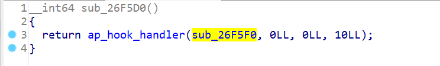
| get_fabric_user_by_token
fabric_access_check
fabric_access_check
Down p sub_26F5F0+3E call fabric_access_check
Down p sub_272170+4C call fabric_access_check
Down p sub_272270+50 call fabric_access_check
ap_hook_handler
|
ap_hook_handler 是 Apache 中用于在模块中注册请求处理函数（handler）的钩子。
在 httpd.conf 中可以找到对应的 API 路径 /api/fabric/device/status：
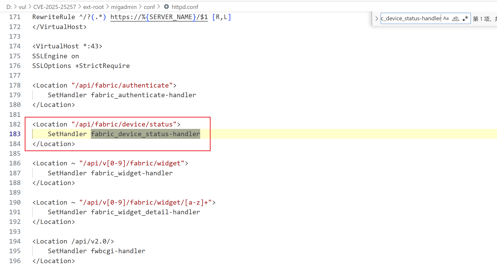
RCE
watchtowr 实现 RCE 的思路如下：
1. 通过 MySQL into outfile 实现写 pth 文件
2. 访问 ml-draw.py 触发 pth 文件执行
CGI
CGI 介绍：
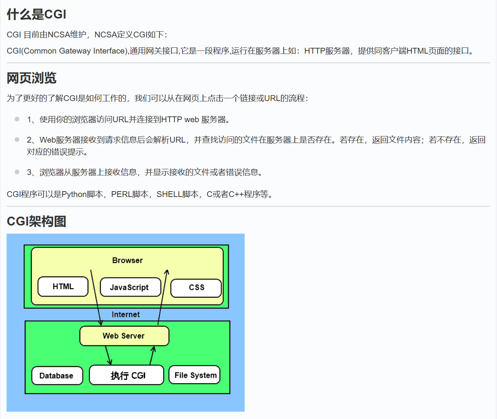
Apache CGI 配置：
| ServerRoot "/migadmin"
# 用户访问 /cgi-bin/ 实际指向的是 /migadmin/cgi-bin/ 中的脚本
<IfModule alias_module>
ScriptAlias /cgi-bin/ "/migadmin/cgi-bin/"
</IfModule>
# /migadmin/cgi-bin 下的脚本会当作 CGI 执行
<Directory "/migadmin/cgi-bin">
Options +ExecCGI
SetHandler cgi-script
</Directory>
|
这个环境中 /migadmin/cgi-bin/ 下还有一个 ml-draw.py 文件，同样也会被执行，可以通过 WEB 访问触发。
PTH
site-packages 中的 .pth 文件，文件中的任何一行以 import[SPACE] 或 import[TAB] 开头，后跟有效的 Python 代码，那么就会在启动的时候运行这个代码。
这里就是通过 mysql into outfile 写入 .pth 文件然后再访问 py 文件触发实现的 RCE，因为写一个 bash 的 cgi 还需要赋予权限所以只能借助 py 的 pth 实现。
绕过
在上面的 SQL 注入中有 空格+128字符的限制。
做法是分块写字符串到一个字段中，然后不断叠加最终完整，干净的 Payload 如下：
| use fabric_user;update a set a=(select concat(a,[PAYT]) from a);--
select a from fabric_user.a into outfile '/var/log/lib/python3.10/pylab.py' FIELDS ESCAPED BY '
|
参考链接
- https://labs.watchtowr.com/pre-auth-sql-injection-to-rce-fortinet-fortiweb-fabric-connector-cve-2025-25257/
- https://mp.weixin.qq.com/s/FO0loFaE8c4KqBS3eDvalQ
- https://nosec.org/home/detail/4990.html
{kind=link}
{kind=link}
{kind=link}
{kind=link}
{kind=link}
{kind=link}
{kind=link}
{kind=link}
{kind=link}
{kind=link}
{kind=link}
{kind=link}
{kind=link}
{kind=link}
{kind=link}